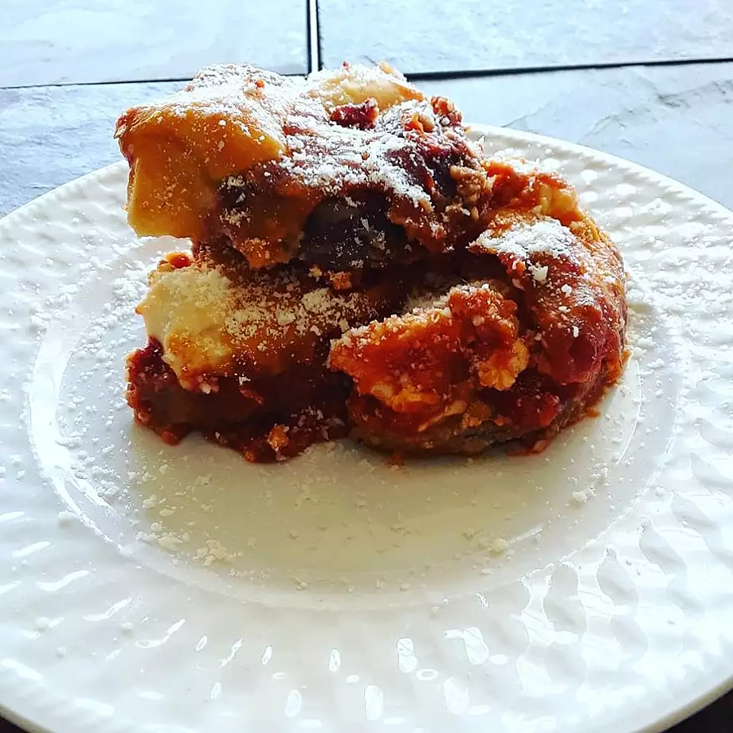

Eggplant Parmesan Recipe

Description
Eggplant Parmesan recipe for the slow cooker, made in layers with marinara sauce and cheese.
Ingredients
- 4 eggplant
- 1 tablespoon salt
- 1 cup extra-virgin olive oil
- 2 eggs
- 1/3 cup water
- 3 table spoons
Steps
- Place eggplants slices in a large bowl in layers, sprinkling each layer with salt. Let stand for 30 minutes to drain. Rinse and dry on paper towels.
- Heat olive oil in a large skillet over medium heat. Whisk eggs with water and flour until smooth. Dip eggplant slices in batter and fry in the hot oil until golden brown, working in batches of 2 to 3 slices at a time.
- Mix seasoned bread crumbs with Parmesan cheese in a bowl. Place 1/4 of the eggplant slices into a slow cooker and top with 1/4 of the crumbs, 1/4 of the marinara sauce, and 1/4 of the mozzarella cheese. Repeat layers three more times.
- Cover and cook on Low until tender and flavors have blended, 4 to 5 hours.